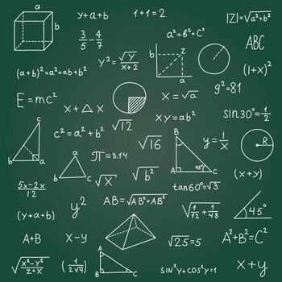

Very complex . loda math .mostly dunno. Googee ai Geometry & TrigonometryPythagorean Theorem: \(a^2 + b^2 = c^2\)Area of a Circle: \(A = \pi r^2\)Circumference of a Circle: \(C = 2\pi r\)Area of a Triangle: \(A = \frac{1}{2}bh\)Area of a Rectangle: \(A = l \times w\)Perimeter of a Rectangle: \(P = 2(l + w)\)Volume of a Sphere: \(V = \frac{4}{3}\pi r^3\)Surface Area of a Sphere: \(SA = 4\pi r^2\)Volume of a Cylinder: \(V = \pi r^2 h\)Law of Sines: \(\frac{a}{\sin A} = \frac{b}{\sin B} = \frac{c}{\sin C}\)Law of Cosines: \(c^2 = a^2 + b^2 - 2ab \cos C\)Trigonometric Identity: \(\sin^2\theta + \cos^2\theta = 1\)Algebra & FunctionsQuadratic Formula: \(x = \frac{-b \pm \sqrt{b^2 - 4ac}}{2a}\)Slope-Intercept Form: \(y = mx + c\)Point-Slope Form: \(y - y_1 = m(x - x_1)\)Distance Formula: \(d = \sqrt{(x_2 - x_1)^2 + (y_2 - y_1)^2}\)Midpoint Formula: \(M = (\frac{x_1+x_2}{2}, \frac{y_1+y_2}{2})\)Equation of a Circle: \((x-h)^2 + (y-k)^2 = r^2\)Difference of Squares: \(a^2 - b^2 = (a-b)(a+b)\)Square of a Sum: \((a+b)^2 = a^2 + 2ab + b^2\)Logarithm Product Rule: \(\log_a(MN) = \log_a M + \log_a N\)Exponent Product Rule: \(a^m \times a^n = a^{m+n}\)Compound Interest: \(A = P(1 + \frac{r}{n})^{nt}\)Calculus & AnalysisFundamental Theorem of Calculus: \(\int_a^b f(x) dx = F(b) - F(a)\)Definition of a Derivative: \(f'(x) = \lim_{h \to 0} \frac{f(x+h) - f(x)}{h}\)Power Rule: \(\frac{d}{dx}x^n = nx^{n-1}\)Chain Rule: \(\frac{dy}{dx} = \frac{dy}{du} \cdot \frac{du}{dx}\)Integration by Parts: \(\int u \, dv = uv - \int v \, du\)Euler's Identity: \(e^{i\pi} + 1 = 0\)Taylor Series: \(f(x) = \sum_{n=0}^{\infty} \frac{f^{(n)}(a)}{n!}(x-a)^n\)Fourier Transform: \(\hat{f}(\xi) = \int_{-\infty}^{\infty} f(x)e^{-2\pi ix\xi} dx\)Physics-Based MathematicsMass-Energy Equivalence: \(E = mc^2\)Newton’s...